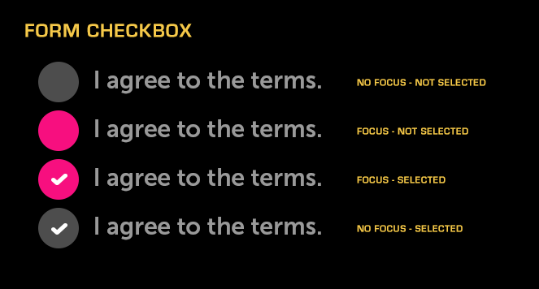

Form Checkbox
About
A Checkbox Form is a control that may be toggled on and off. It is used in forms to indicate agreement to conditions.
API Reference
Behavior and States
Behavior
Form Checkbox is a focusable and selectable control, comprised of a circular checkbox and a text label. A checkmark in the circle indicates the selected state, while the absence of a checkmark indicates the unselected state.
Form Checkboxes may be either independent or organized into groups. When ungrouped, each individual form checkbox may be selected or deselected regardless of the state of any other form checkboxes. When grouped, only one form checkbox may be selected within a given group. The selection of a new option will cause any previously-selected option to be automatically deselected.
States
Normal (up/unpressed)
The control is available for use and is not selected. There is no checkmark.
Focus (hover)
The control has the current focus from the remote and is ready to be selected.
Selected (down/pressed)
The control has been selected and a checkmark is displayed within the circle.
Deactivated (disabled)
The control cannot be selected and the circle does not appear.
Sizing
If the text within a Form Checkbox is too long, it will be truncated and ellipsized, and will marquee (scroll horizontally) when the control is focused. Since there is a dedicated space for the checkmark, there is no need to worry about truncation in the selected state, as there is with Checkbox Item.
Illustration
